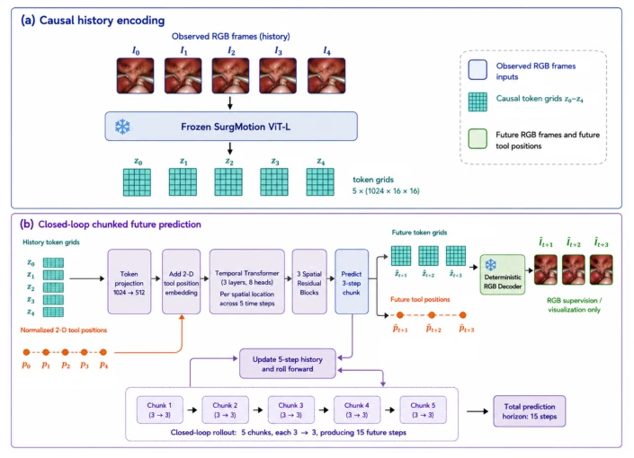
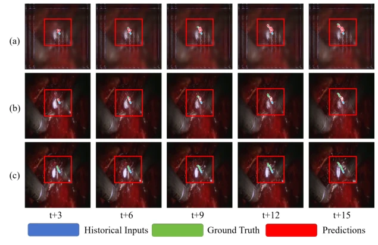

This paper provides a prototype for surgical world models, attempting to couple 'how the scene changes' and 'how instruments move' together for calculation. Although named "World Action Modeling", essentially it remains a multi-task prediction baseline. The highlight lies in feeding visual latent variables and trajectory residuals together into the same spatiotemporal encoder, and employing a chunked autoregressive (chunked autoregressive) approach to counteract the collapse of long-term prediction. However, do not be deceived by "preliminary"; after 15 steps of prediction, the image blurs into a mosaic, and trajectory errors accumulate like a snowball, far from truly usable closed-loop planning. Although PSNR improvement is significant, long-term drift remains severe. Rather than a world model, it is more like a "trajectory predictor that can draw". It proves joint prediction is feasible, but does not solve the fundamental problem of long-term consistency, belonging to the primary stage of "can run but not far", and future efforts still rely on stronger action conditions to save the situation.
Surgical planning cannot only look at where instruments go, but also how tissues change. Existing work either only handles image generation (e.g., [3-5]) or only trajectory prediction (e.g., [16, 7, 12]), with the two being separated. Image generation models cannot verify trajectory geometric accuracy, while trajectory models ignore visual consequences. This leads to predictions that may be geometrically close to expert demonstrations, but scene states are unreasonable. The authors point out that a true world model requires unified evaluation of visual evolution and action motion; otherwise, even if generated videos are realistic, instruments may "clip through" or deviate. Current evaluation mostly focuses on visual fidelity (e.g., FVD, PSNR), ignoring geometric stability at the action level, which limits its application in closed-loop planning. Separated tasks cannot capture the causal impact of instrument motion on the surgical scene, leading to planning lacking physical consistency.
The overall flow is historical observation encoding -> spatiotemporal fusion -> separate prediction -> chunked autoregressive. First, frozen SurgMotion ViT-L is used to extract visual tokens, trajectory coordinates are embedded via MLP, and both are fused then input into the spatiotemporal encoder. Prediction heads split into two paths: the visual head predicts latent variable residual changes, and the trajectory head predicts residual correction based on a constant velocity prior. The key innovation is "chunked autoregressive" (chunked autoregressive rollout), predicting only 3 steps at a time, feeding prediction results back to the history window, repeating 5 times to accumulate 15 steps. During training, Scheduled Sampling is used to gradually introduce prediction states, reducing distribution differences between training and inference. This design aims to balance short-term accuracy and long-term stability, preserving observation structure in residual form to avoid cumulative error diverging too quickly. The loss function combines token MSE, RGB reconstruction, edges, trajectory position and speed, and other objectives to ensure multimodal consistency.

Fig. 1. Overview of the proposed method. (a) Causal history encoding: five observed RGB frames are processed by the frozen SurgMotion ViT-L encoder to obtain causal token grids. (b) Closed-loop chunked future prediction: the predictor jointly forecasts future token grids and normalized 2-D tool positions in 3-step chunks; each predicted chunk updates the 5-step history for the next rollout, producing a total 15-step forecast.
Tested on the SurgWMBench benchmark, comparing direct one-shot (one-shot) prediction and chunked prediction. Visual metrics use PSNR, SSIM, LPIPS, and trajectory metrics use ADE, FDE. Results show the chunked strategy completely outperforms one-shot; the first segment PSNR improved from 18.86 to 23.11, and ADE dropped from 45.77 to 22.22. However, during long-term prediction (t+13:15), PSNR dropped back to 17.98, and ADE surged to 158.52. This indicates chunking alleviates error accumulation but does not eradicate it. Qualitative results also show significant distortion in both image and trajectory after 15 steps. The experiments prove the feasibility of joint prediction but also expose significant limitations of visual degradation and trajectory drift in long-term prediction; future work needs to explore stronger action conditions or uncertainty modeling. Data originates from SAR-RARP50 RARP surgical videos, containing suturing action clips.

Fig. 2. Qualitative comparison of direct one-shot prediction and chunked autoregressive rollout. Columns show the future states at t + 3, t + 6, t + 9, t + 12, and t + 15. Rows show the (a) direct one-shot prediction, (b) chunked autoregressive rollout and (c) ground truth. Instrument trajectories are overlaid on the corresponding visual states. For visualizaton purpose, we cropped the region of interest for comparision.